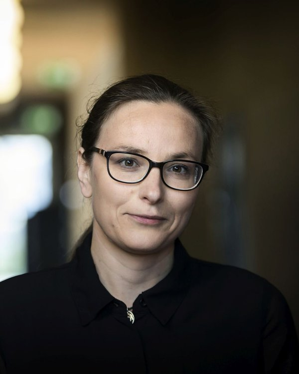
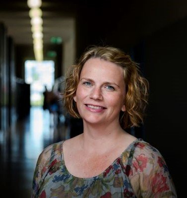
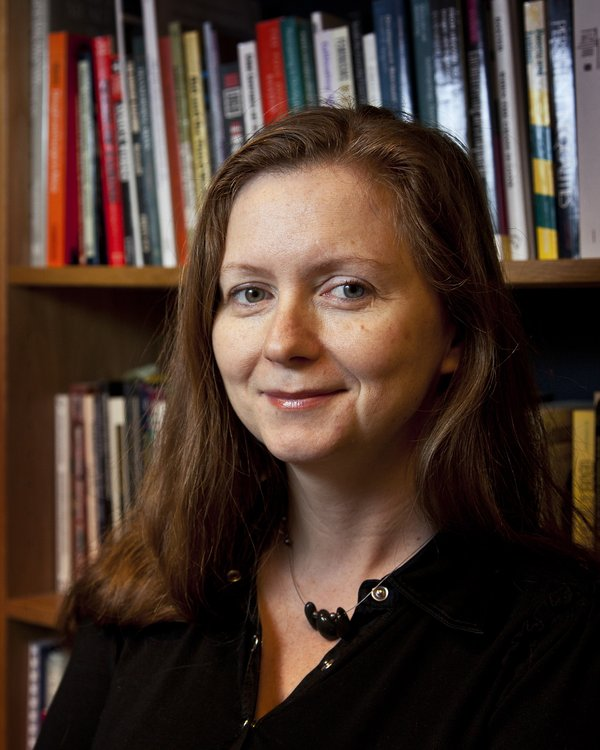
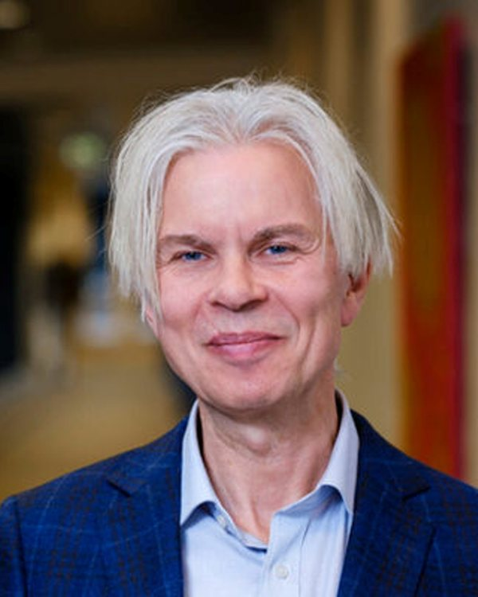
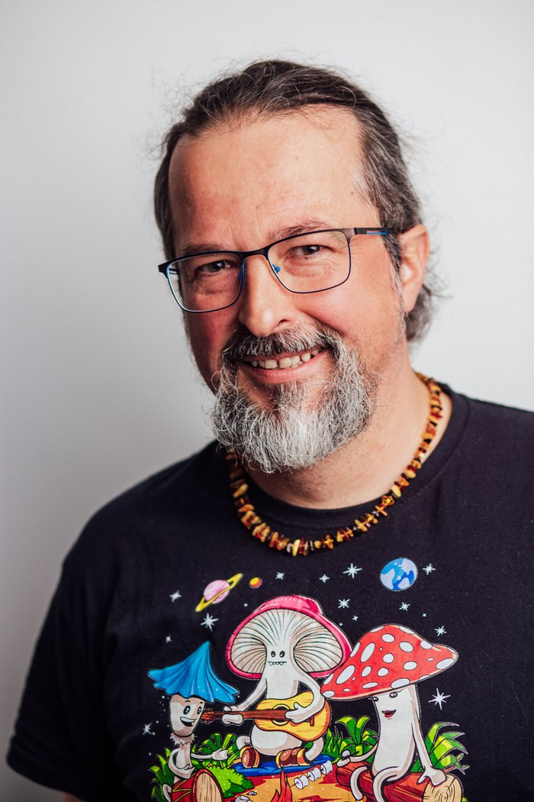
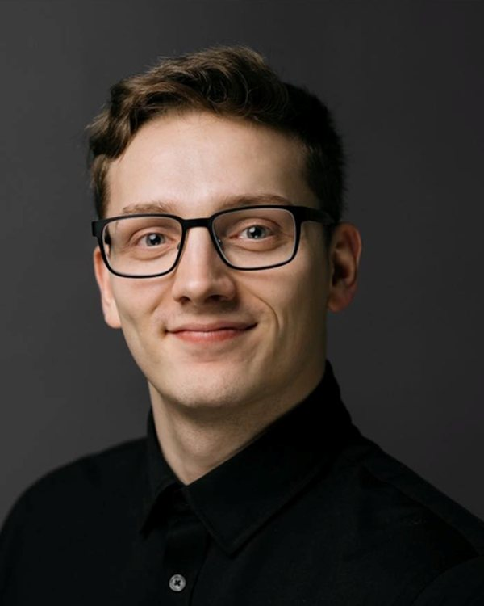
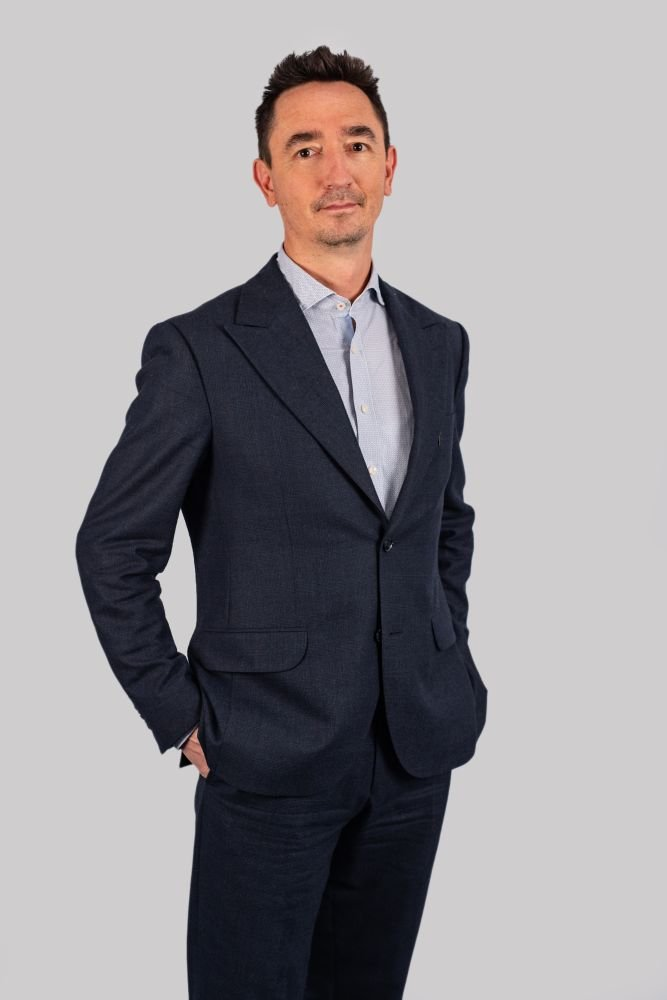
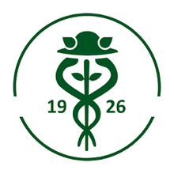
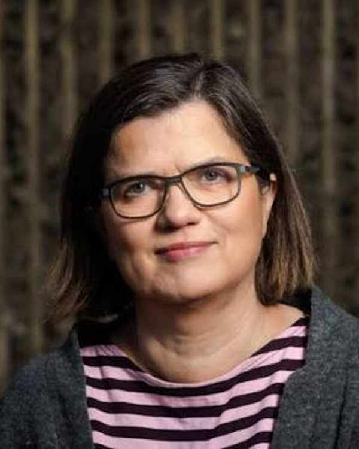
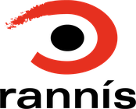

01
The general population
Baseline attitudes toward money, saving, and financial security in Icelandic and Polish societies — the reference point against which the other two groups are compared.
Iceland and PolandA study of how migration between countries reshapes how people understand money, save it, and give it meaning.
The project asks a single question: how do migration experiences shape the way people perceive and manage money?
To answer it, the project examines attitudes toward money among the general populations of Iceland and Poland, Polish migrants living in Iceland, and second-generation Poles raised in Iceland. Comparing these groups makes it possible to trace how the meaning attached to money changes through migration.
Combining quantitative surveys with qualitative interviews, a team of economists and anthropologists in both countries examines how money is embedded in social life: in families, savings and remittances, expectations and obligations. The aim is to understand not only how much people save, but also what money means to them and how that meaning changes as people, goods, ideas, and financial services move across borders.
Baseline attitudes toward money, saving, and financial security in Icelandic and Polish societies — the reference point against which the other two groups are compared.
Iceland and PolandHow the meaning of money and the way it is managed change for people who have moved from Poland to Iceland and navigate two financial cultures at once.
First generationHow second-generation Poles raised in Iceland understand, value, and talk about money — and which attitudes are carried forward from their parents.
Second generationPeer-reviewed articles, working papers, datasets, and conference presentations produced by the project will be listed here as they are published. Each entry will link to the full text or DOI.
Project milestones, fieldwork updates, talks, and events will be posted here.
Updates will be added as the project progresses.[One-line summary of the update.]
[One-line summary of the update.]
[One-line summary of the update.]









